OCON es un DJ y productor argentino enfocado en variaciones del techno, el trance y el dark tech, con un sonido marcado por bajos contundentes, atmósferas oscuras y una energía de pista sostenida. Fundador de No Signal Club, impulsa una propuesta orientada a la expansión de la cultura rave.
Influenciado por estilos de sellos como Drumcode, Volta, KNTXT y Exhale, su propuesta dialoga con la nueva ola del techno global, incorporando una sensibilidad contemporánea orientada tanto al club como a la escucha.
Detrás del proyecto hay una formación académica poco común: OCON es Doctor en Ciencia Política. Esta doble identidad —intelectual y artística— se traduce en una aproximación conceptual a la música, donde cada set funciona como una experiencia que conecta cuerpo, emoción y estructura.
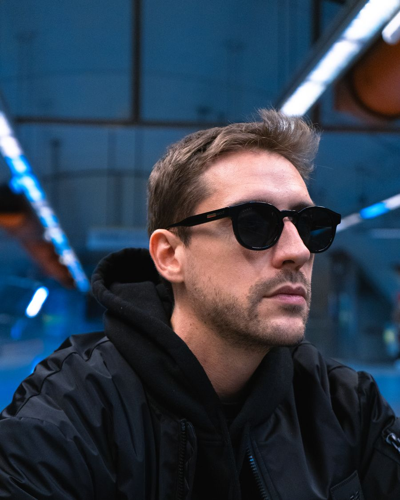
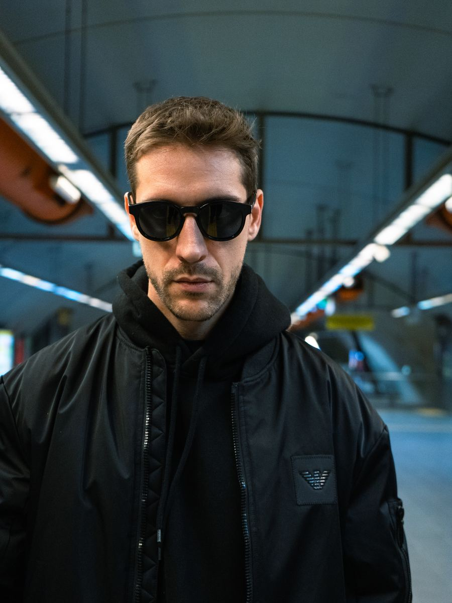
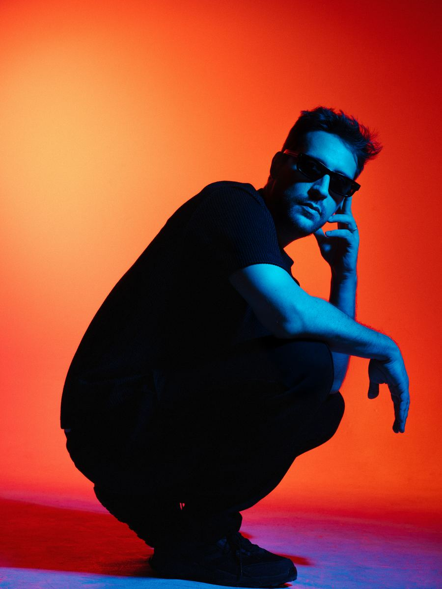
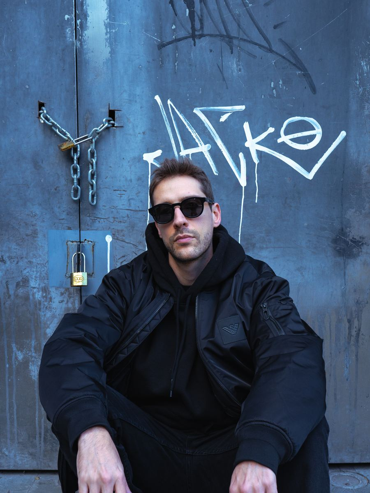
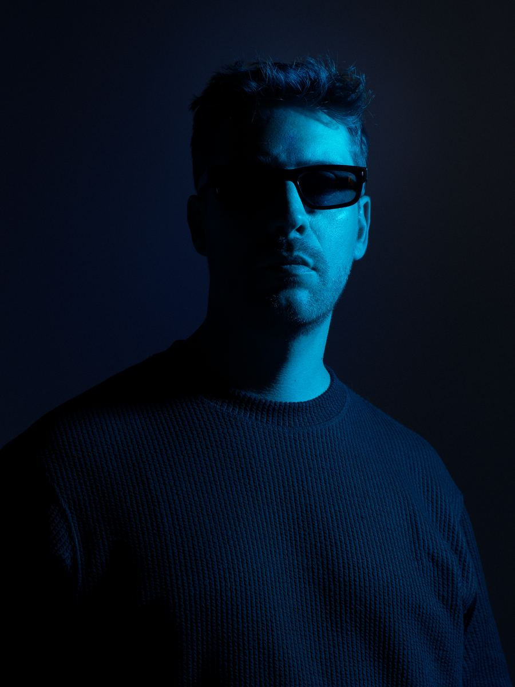
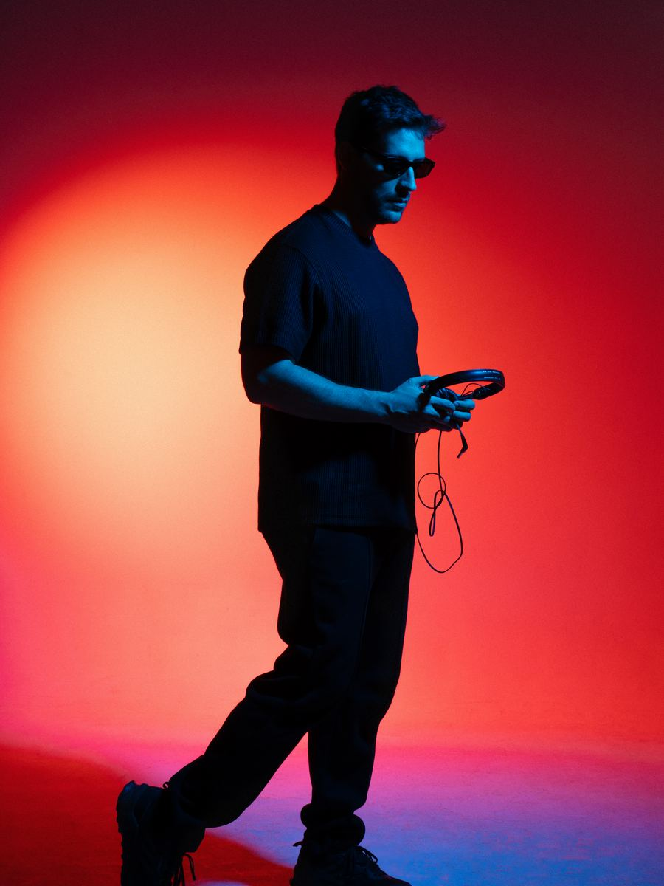
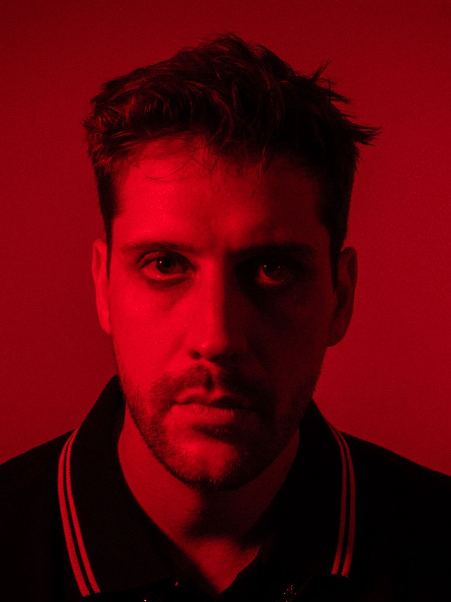
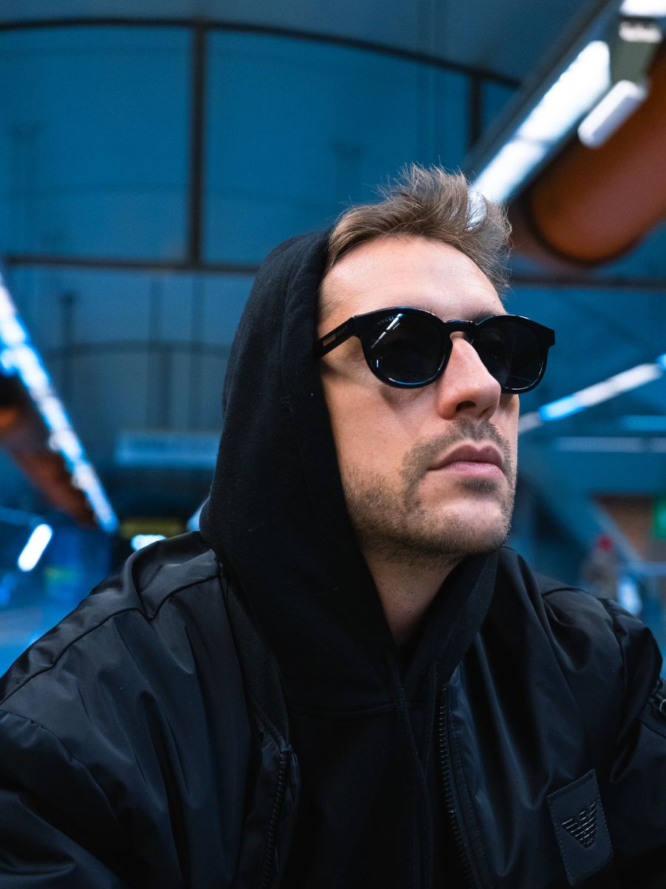
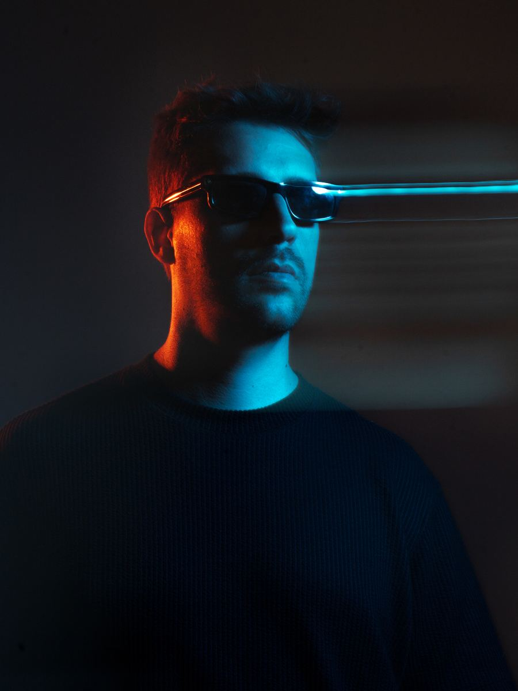
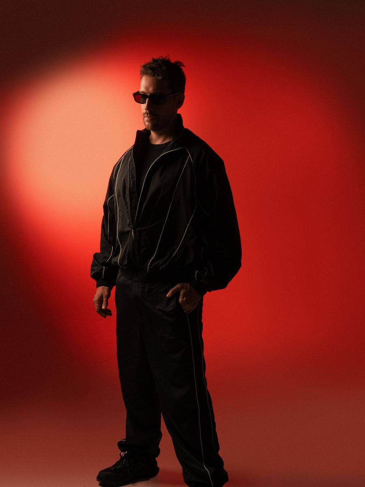
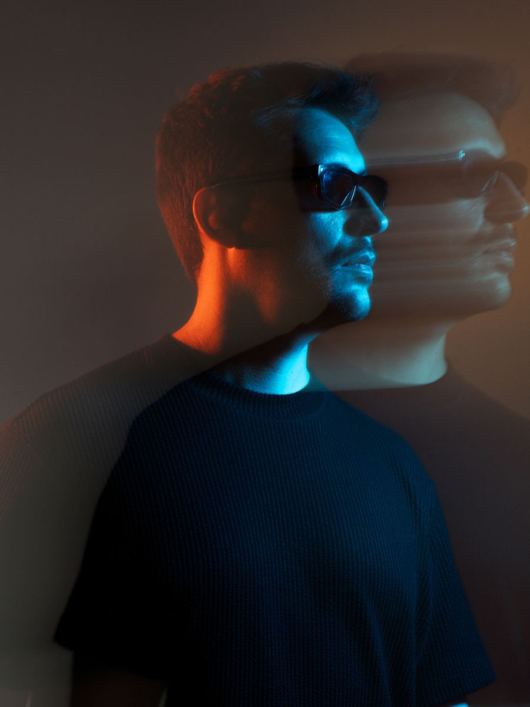
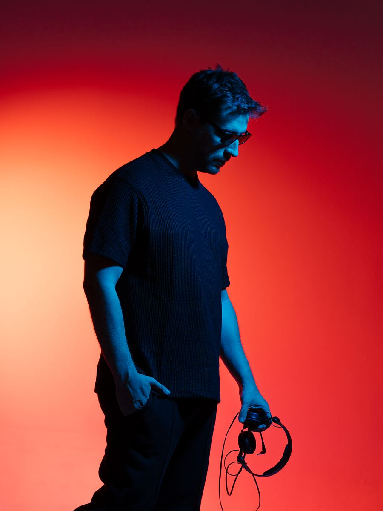
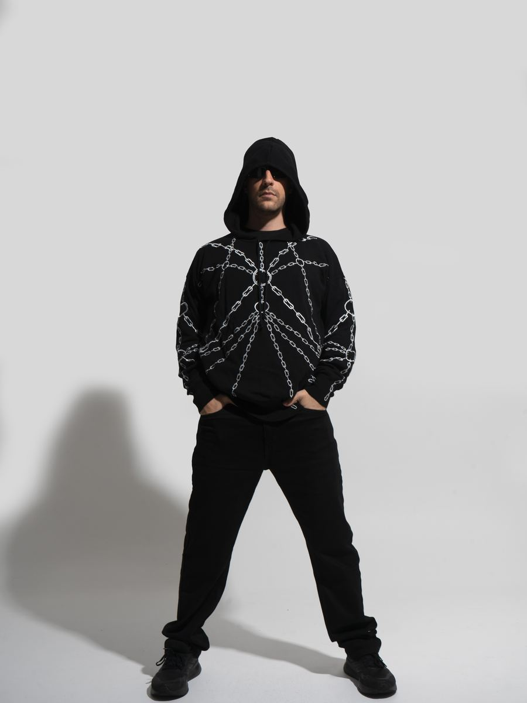